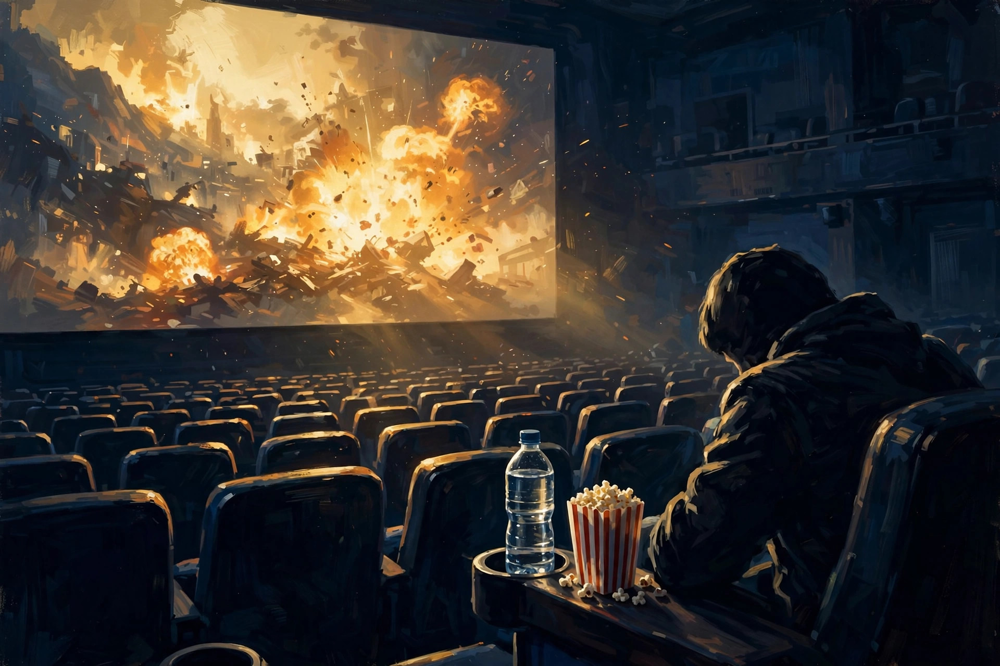

史上最全能特工要谢幕了？
看完长达近三小时的碟中谍最后清算（系列的第八部，但和第七部的关系实际上是上下集，以下简称碟8），我意识到居然没有尿急，原因是全程都忘了喝水。

以前影迷有个说法叫“尿点”。意思是一部影片（尤其是动作片）有若干吸引人的爆点，但爆点之间会安排些相对和缓的情节，让观众情绪适当放松一下（其实真实原因是爆点太烧钱）。爆点之间的这些时间观众可以起身如厕，也不必担心错过重要情节，所以这段时间就叫尿点。于是，影迷称赞一部电影情节紧凑让人欲罢不能的最高境界就是“全程无尿点”。而我认为碟8这部电影走得更远，我愿称之为“全程无饮点”。无饮点自然也就无尿点了，连水都忘了喝了，而且是长达三小时。可见电影有多吸引人。
废话这么多只不过想先表达下对六十多还在认真拍动作戏的阿汤哥（汤姆克鲁斯的昵称，本系列电影的主演主创及灵魂）的敬意，以下进入正题。
在开始谈碟8前，先谈谈我对这个系列的一些想法。其实碟中谍这一系列我并没有看全，全部看下来的可能就是最近几部。早期的几部也不是最初看的，而是后来补的。感觉这一系列覆盖了我的整个青春直至现在（中老年），时间跨度之大，说是人生伴侣都毫不夸张，对于70、80后来说尤其如此。移动互联网时代长大的小孩可能对这系列有点无感，毕竟那些我们当时觉得很炫酷的谍战黑科技，在他们眼里已经很outdated了。虽然该系列近几年也与时俱进地引入了AI等最新的科技元素，但其实故事内核、叙事风格还是与早年基本一致的。加之移动互联网的发展大大冲击了电影业，造成这一系列近年来越来越少受人关注。所以，像我们这些一路看下来的70、80后们，说是没有情怀加成那也是假的。
说回碟8（部分剧透警告）。本片从故事上看是上一部的延续（所以说7和8更像是上下集关系），但和以往最大的不同是，本集加入了一些情怀元素（如第一集人物的回归，剧中某些配角与先前退场人物的关系、前作的一些情节回放等）。这强烈暗示了本集很可能是该系列的谢幕之作。伊森亨特，这位史上最全能的特工，就这样要光荣退休了吗？可不吗，天下没有不散的宴席。阿汤哥再靓，毕竟也是会老的嘛（虽然六十多了依然很帅，这点我等凡人自愧不如）。
纵观好莱坞影史，有很多系列作品，其中不乏如星球大战这样的大作。但其中大多系列只是第一部或前几部口碑较好，后面的要么变得平庸，要么甚至烂尾（漫威：勿CUE）。很少有像碟中谍这样数十年如一日打造一个精品系列，每一集都带来不同精彩，几乎每一部都好评如潮的。在我看来，同类题材中，精彩程度能与之大致比肩的只有马特达蒙的《谍影重重》了（但该剧自从换角后貌似也无后续了）。可能有资深影迷会提到詹姆士邦德系列，可我并不认为两者是一个类型的影片。在我看来，邦德系列更像是玄幻或奇幻剧了。简单说是把间谍描写得太神乎其神了，几乎无所不能。有人可能说碟中谍不也是吗，主角不也是上天入地，无所不能？其实不然，碟中谍中的阿汤哥还是更接地气的。他哪部戏里不是九死一生才能完成所谓“不可能的任务”（碟中谍系列的英文mission impossible）？就以碟8为例，阿汤哥在好几个场景都拼尽全力，不惜以生命为代价。但观众不会觉得他是像邦德那样轻松地完成每项任务，留下“事了拂衣去，深藏身与名”的潇洒形象，而只会心疼阿汤哥为什么每次都这样拼死战斗到底。作为真正懂他的观众，真心希望他好好歇一下。所以他的谢幕，在我看来，是遗憾，但对他而言，是好事。
再好的红花也得有绿叶配，一部优秀的电影也是如此。伊森亨特这个全能特工形象的成功，当然离不开他的优秀团队。这个团队的核心人物主要是亨特、Luther和Benji三人，还有换了几次的女主。
先说说Luther和Benji。两人共同的技能点是黑客，只是风格不同。Luther经验丰富，风格老练沉稳。Benji幽默有急智，有时在关键时刻能发挥重要作用。可以说没这老哥俩，光靠亨特一人单打独斗，可能他早就挂了。碟8中Luther的牺牲让人痛惜伤心，Benji也身受重伤，所幸捡回一命。在拯救人类的大业中，牺牲往往是难免的。主角团队一死一伤，也是暗示现实的残酷。不可能完成的任务经过艰辛的努力也可能完成，但人总归不是神，也要顺应天命。但Luther给亨特的临别赠言也很有道理：Everyone is the master of their own life. Nothing is written（大意：每个人都是自己人生的主宰。没有什么是注定的）。
再来谈谈碟中谍系列中的女性角色。与邦德等谍战题材电影不同的是，碟中谍的女性角色都不是“XX女郎”之类的花瓶。虽然她们戏份都不算多，但都给人留下了深刻印象。如亨特的前妻茱莉亚、伊尔莎，甚至反派女性角色白寡妇。最新的7、8中的女主Grace也挺有魅力的。虽然是高级扒手出身，但心地善良，成为亨特的得力助手，甚至在关键时刻救了亨特的命。她在碟8中那句台词：what's the difference between a pickpocket and a great one? timing.（大意：一般扒手和高级扒手的区别在哪？时机。）。本以为是一句俏皮话，没承想后面却成了拯救人类命运的技能展示（具体就不剧透了）。
最后，说说本片的瑕疵吧。情怀归情怀，但缺点也不能视而不见。本片优点很多，动作戏扣人心弦，全程无“饮点”，人物形象饱满，演员演技在线等等。明显缺点只有一个，故事太老套。2025年了，还在拿《终结者》系列早就用过的末世预言老调重弹。什么超级AI侵入人类计算机网络，继而打算控制全球核武库毁灭人类啊，这些太耳熟能详了。从一开始就能知道结局的事，过程再坎坷，效果也会打折扣的。
当然对于一个坚持了27年的精品系列电影而言，这只是瑕不掩瑜。虽然it's time to say goodbye，但我还是想对阿汤哥及其饰演的全能特工伊森亨特说：感谢你们，陪伴了我的大半人生，给我的生命带来了光。